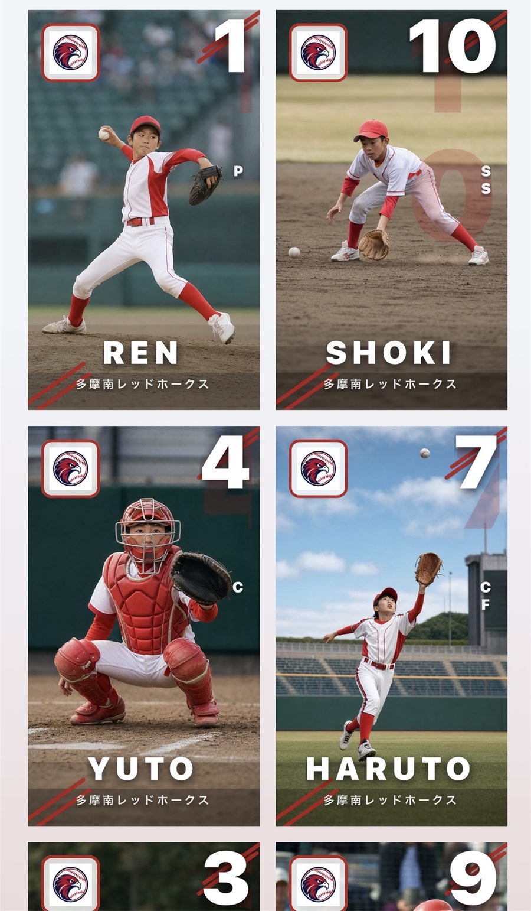

むずかしい設定はありません。アプリを入れて、球場の絵をタップするだけ。
この順番どおりに進めれば、はじめての試合が記録できます。
STEP 1
まずは App Store から入れます。アカウント登録は要りません。メールアドレスが必要になるのは、あとでチームを共有するときだけです。

STEP 2
記録する前に、その日の試合を1つ作ります。入れるのは基本の情報だけです。

STEP 3
記録の画面は球場の絵です。スコアの知識は要りません。打球が飛んだ場所を押すだけです。

STEP 4
来られなかった人にも、試合が動くたびに届けられます。

STEP 5
記録した試合は、いろいろな見方で振り返れます。

STEP 6
記録を続けると、シーズンぶんが1か所に集まっていきます。

STEP 7
はい。そのために作ったアプリです。打球が飛んだ場所を押すと、その場所で起こりうる結果だけが出てきます。アウトの数や走者の動き、得点や打点はアプリが計算します。
あとから結果を直せます。得点・打点・自責点も、直した結果にあわせて計算し直されます。
アプリのバックアップ機能で、記録と写真をまとめて書き出せます。新しい端末で復元すれば、そのまま続けられます。写真は端末の中だけに保存されているので、この手順で移してください。
お問い合わせ（baseball.log.jp@gmail.com）までご連絡ください。よくある質問はホームのよくある質問にもまとめています。